Tema 2. Flutter y Dart
| Unidad | Unidad 2. Herramientas de trabajo en desarrollo de aplicaciones para dispositivos móviles |
| Tema | Tema 2. Flutter y Dart |
1 Lo que vas a lograr
- Creas y ejecutas un proyecto Dart puro desde la terminal, y explicas para qué sirve cada archivo que genera.
- Escribes programas en Dart usando variables, tipos, colecciones, null safety, funciones y programación orientada a objetos.
- Usas
async,awaityFuturepara explicar por qué Flutter necesita asincronía y qué pasa si no la usas. - Creas un proyecto Flutter desde terminal y explicas la función de cada carpeta y archivo que genera.
- Ejecutas la app en un emulador, usas la recarga en caliente y modificas la pantalla para que tenga estado propio con
setState. - Reconoces características modernas de Dart 3 (records, patrones, clases selladas) y los extension methods, para leer código Flutter actual sin sorpresas.
2 Qué es Dart y por qué lo ves antes que Flutter
Dart es un lenguaje de programación de propósito general, creado por Google y presentado en 2011. Es de tipado estático: el compilador revisa los tipos antes de correr el programa. Es orientado a objetos y trae soporte nativo para programación asíncrona.
Dart se ejecuta de dos formas. Compilado a código de máquina nativo (AOT, ahead of time) para producción: así queda la versión que instala un usuario real, rápida de arrancar y liviana. Interpretado por una máquina virtual (JIT, just in time) mientras programas: así es como Dart inyecta tus cambios en la app que ya está corriendo, sin reiniciarla. Esa segunda forma es el mecanismo detrás de la recarga en caliente.
Flutter es un framework de interfaz escrito en Dart. Cada widget es, por debajo, una clase de Dart con un método build(). Sin dominar la sintaxis del lenguaje, un error de Flutter es difícil de ubicar: puede venir del framework o del lenguaje que lo sostiene. Por eso esta guía dedica casi toda la sesión a Dart puro, sin pantallas de por medio, y deja la creación del primer proyecto Flutter para el final.
Dart también se usa fuera de Flutter: compila a JavaScript para correr en el navegador, y sirve para escribir herramientas de línea de comandos o servidores HTTP simples con las plantillas web y server-shelf.
Las versiones que usa esta guía son las que quedaron instaladas y verificadas el tema anterior con flutter doctor:
| Herramienta | Versión probada |
|---|---|
| Flutter SDK | 3.41.9 (canal stable) |
| Dart SDK | 3.11.5 |
| DevTools | 2.54.2 |
3 Parte 1. El lenguaje Dart
Esta parte recorre Dart en el mismo orden en que lo vas a necesitar: primero creas un proyecto y aprendes a ejecutarlo, luego los datos (variables, tipos, colecciones), luego cómo tomar decisiones y repetir código (control de flujo, funciones), luego cómo agrupar datos y comportamiento (clases), y por último la asincronía, que es la razón por la que Flutter existe tal como lo conoces. Ningún tema depende de Flutter todavía: todo corre en la terminal, con dart run.
1 Crea tu primer proyecto Dart
Dart tiene su propio comando de creación de proyectos, independiente de Flutter. Ábrelo en una terminal para confirmar que sigue instalado desde el tema anterior:
dart --versionDart SDK version: 3.11.5 (stable) (Wed Apr 15 00:36:32 2026 -0700) on "windows_x64"Ahora crea un proyecto de consola. Hazlo en una carpeta de trabajo aparte, no dentro de hola_iue, la carpeta del proyecto Flutter:
dart create -t console hola_dartLa bandera -t console pide la plantilla de aplicación de consola, la más simple. Si la omites, dart create usa console por defecto. Dart ofrece cinco plantillas: cli (línea de comandos con parseo de argumentos), console (la que acabas de usar), package (una librería reutilizable, sin punto de entrada), server-shelf (un servidor HTTP mínimo) y web (una app web con las librerías núcleo de Dart, sin Flutter).
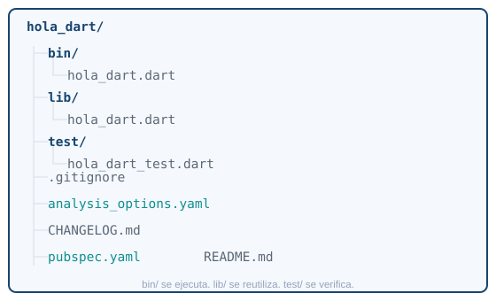
bin/ guarda lo que se ejecuta. lib/ guarda lo que se reutiliza. test/ guarda las pruebas.
| Archivo o carpeta | Para qué sirve |
|---|---|
bin/hola_dart.dart |
El punto de entrada: el main() que corres desde terminal |
lib/hola_dart.dart |
Código reutilizable, pensado para importarse desde otros archivos |
test/hola_dart_test.dart |
Pruebas automáticas del código de lib/ |
pubspec.yaml |
Nombre, versión y dependencias del proyecto |
analysis_options.yaml |
Reglas del analizador estático (avisos de estilo y errores) |
.gitignore |
Qué carpetas no debe versionar Git (.dart_tool/, build/) |
CHANGELOG.md |
Historial de cambios del paquete, si lo publicas en pub.dev |
README.md |
Descripción del proyecto |
pubspec.yaml es el manifiesto del proyecto. Ábrelo y vas a ver algo como esto:
name: hola_dart
description: Un proyecto de ejemplo en Dart.
version: 1.0.0
environment:
sdk: ^3.11.5
dev_dependencies:
lints: ^5.0.0
test: ^1.24.0name identifica el paquete. environment.sdk fija qué versiones del SDK de Dart acepta el proyecto. dependencies (todavía no aparece aquí) son los paquetes que tu programa necesita para funcionar; dev_dependencies son los que solo hacen falta mientras desarrollas (linters, pruebas) y no se incluyen si publicas el paquete. Para agregar una dependencia no edites el archivo a mano. http es el paquete oficial de Dart para hacer peticiones web (GET, POST…), y sirve aquí como ejemplo real de cómo se agrega una dependencia:
dart pub add httpEse comando escribe la línea en pubspec.yaml y descarga el paquete. La notación de versiones sigue semver (MAYOR.MENOR.PARCHE):
| Notación | Significado |
|---|---|
^1.1.0 |
Desde 1.1.0 hasta (sin incluir) 2.0.0: compatible dentro del mismo MAYOR |
>=1.0.0 <2.0.0 |
Rango explícito |
1.1.0 |
Exactamente esa versión, nunca otra |
any |
Cualquier versión; evítalo, hace el proyecto impredecible |
Abre bin/hola_dart.dart en tu editor. Vas a usar ese archivo como cuaderno de pruebas durante toda la Parte 1: pega ahí cada ejemplo de esta guía y corre el programa para ver qué imprime. El archivo trae por defecto un main() con un print(); bórralo y empieza desde cero.
2 Ejecuta y verifica
dart runSin argumentos, dart run busca automáticamente bin/hola_dart.dart (el archivo con el mismo nombre del proyecto): es justo lo que la propia terminal te sugiere al terminar dart create. Si quieres correr un archivo distinto, pásale la ruta:
dart run bin/otro_archivo.dartCada vez que cambies el archivo, vuelve a correr el comando. No hay recarga en caliente en Dart puro, eso es exclusivo de Flutter: la verás en la Parte 2.
Cuando el programa esté listo para repartirse sin que quien lo reciba necesite el SDK de Dart instalado, compílalo a un ejecutable nativo:
dart compile exe bin/hola_dart.dart -o hola_dart.exe./hola_dart.exedart compile exe genera un binario independiente para tu sistema operativo. Arranca más rápido que dart run porque ya no compila nada al ejecutarse, pero el ejecutable solo funciona en el sistema operativo donde lo compilaste.
Tres comandos que vas a usar todo el semestre, incluso dentro de proyectos Flutter:
dart format .Reordena la indentación y los espacios del proyecto completo según el estilo oficial de Dart. No cambia la lógica, solo la forma.
dart analyzeRevisa el código en busca de errores y avisos de estilo sin ejecutarlo. Córrelo antes de dar por terminado un ejercicio: es la forma más rápida de encontrar un error de tipos antes de correr el programa.
dart testCorre las pruebas de test/. Todavía no vas a escribir pruebas, pero el comando ya funciona con el proyecto recién creado.
Variables y tipos
Dart es de tipado estático: cada variable tiene un tipo, y el compilador lo revisa antes de correr el programa. La diferencia entre var, final y const no es de tipo, es de qué tan pronto se fija el valor.
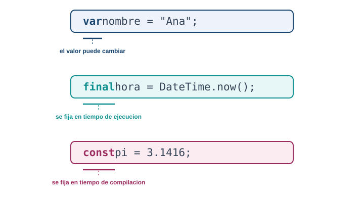
var cambia. final se fija al ejecutar. const se fija antes de ejecutar.
var nombre = "Ana"; // el tipo se infiere como String
nombre = "Luis"; // valido: var admite reasignacion
final horaDeInicio = DateTime.now(); // se conoce solo al ejecutar
// horaDeInicio = DateTime.now(); // error: no se puede reasignar
const limiteDeIntentos = 3; // se conoce antes de ejecutar el programaCuando declaras con tipo explícito en vez de dejar que Dart lo infiera, se ve así:
String nombre = "Ana";
int edad = 21;
double promedio = 4.35;
bool activo = true;Los tipos básicos que vas a usar todo el semestre:
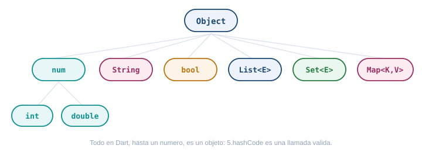
String admite interpolación, la forma de meter una variable o expresión dentro de un texto sin concatenar con +:
var nombre = "Ana";
var edad = 21;
print("Hola, $nombre"); // variable simple: $nombre
print("El próximo año tendrás ${edad + 1}"); // expresión: ${...}
print('Comillas simples y "dobles" adentro'); // ambas comillas son validas
var parrafo = """
Puedes escribir
varias lineas
con comillas triples.
""";Las tres colecciones que vas a usar constantemente:
// List: una secuencia ordenada, admite repetidos
var materias = <String>["Móvil", "Web", "Redes"];
materias.add("Bases de datos");
print(materias[0]); // Movil
print(materias.length); // 4
// Set: una coleccion sin orden garantizado y sin repetidos
var gruposActivos = <int>{601, 602, 603};
gruposActivos.add(601); // no pasa nada, ya estaba
// Map: pares clave-valor
var creditosPorCurso = <String, int>{
"Movil": 3,
"Web": 3,
};
print(creditosPorCurso["Movil"]); // 3
creditosPorCurso["Redes"] = 2;Null safety
Desde Dart 2, un tipo nunca admite null a menos que lo marques con ?. Esto elimina de raíz la excepción más común de cualquier lenguaje con null implícito: intentar usar algo que nunca llegó.
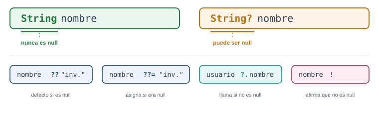
String nombre = "Ana"; // nunca es null, el compilador lo garantiza
String? apodo; // puede ser null; aqui empieza como null
print(apodo ?? "sin apodo"); // "sin apodo", porque apodo es null
apodo ??= "Anita"; // asigna solo si apodo seguia en null
print(apodo?.toUpperCase()); // llama toUpperCase solo si apodo no es null
String? entrada = obtenerEntrada();
print(entrada!.length); // afirma que no es null; si te equivocas, revienta en tiempo de ejecucionUsa ! solo cuando estés seguro. Si te equivocas, Dart lanza una excepción en ese punto exacto, lo cual es mejor que un error silencioso más adelante, pero sigue siendo un error que pudiste evitar con ?? o con un if (entrada != null).
Una variable late se declara sin valor inicial pero promete asignarse antes de leerse, típico en campos que se llenan en un constructor o en initState:
late String token; // no tiene valor todavia
void configurar() {
token = "abc123"; // se asigna antes de cualquier lectura
}Vas a llevar el registro de quién entra al laboratorio de hoy. Necesitas guardar:
- El nombre del estudiante que se inscribe: se conoce en el momento de la inscripción y no cambia después.
- El cupo máximo del laboratorio: siempre son 20 cupos, un número que ya conoces antes de escribir el programa.
- Los intentos de conexión al wifi del salón: empiezan en 0 y van subiendo cada vez que alguien lo intenta.
- El enlace del grupo de WhatsApp del grupo: no todos los grupos tienen uno, así que puede faltar.
Declara las cuatro variables con el tipo y la palabra clave correctos (var, final o const, y ? donde haga falta), y usa ?? para mostrar “sin grupo asignado” cuando el enlace de WhatsApp no exista.
final nombreEstudiante = "Camila"; // se conoce al inscribirse, no cambia despues
const cupoMaximo = 20; // ya se sabe antes de correr el programa
var intentosDeConexion = 0; // cambia cada vez que alguien lo intenta
String? enlaceWhatsApp; // puede faltar
void main() {
print("Cupo maximo: $cupoMaximo");
print("Grupo: ${enlaceWhatsApp ?? "sin grupo asignado"}");
}nombreEstudiante es final porque se calcula una vez, al momento de inscribirse: no lo conoces antes de correr el programa (por eso no es const), pero tampoco cambia después (por eso no es var). cupoMaximo es const porque el valor 20 está fijo antes de ejecutar. intentosDeConexion es var porque literalmente su trabajo es cambiar. enlaceWhatsApp necesita el ? porque no todos los grupos lo tienen: sin el signo de interrogación, Dart no te dejaría dejarlo sin valor.
Operadores útiles
El operador cascada .. te deja encadenar varias llamadas sobre el mismo objeto sin repetirlo:
var lista = <int>[]
..add(1)
..add(2)
..add(3);
print(lista); // [1, 2, 3]El operador spread ... expande una colección dentro de otra, y ...? hace lo mismo pero tolerando que la colección de origen sea null:
var base = [1, 2, 3];
var extendida = [0, ...base, 4]; // [0, 1, 2, 3, 4]
List<int>? opcional;
var segura = [0, ...?opcional, 9]; // [0, 9], no revienta aunque opcional sea nullDentro de un literal de colección puedes usar if y for para construirla condicionalmente:
bool mostrarExtra = true;
var opciones = [
"Guardar",
"Cancelar",
if (mostrarExtra) "Guardar como plantilla",
];
var cuadrados = [for (var i = 1; i <= 5; i++) i * i]; // [1, 4, 9, 16, 25]Control de flujo
if, for, while y do-while funcionan igual que en la mayoría de lenguajes tipados. Para un if corto que solo elige un valor, usa el operador ternario condicion ? siVerdadero : siFalso:
int temperatura = 22;
String estado = temperatura > 15 ? "calido" : "frio";
print("El clima es $estado");for (var i = 0; i < 3; i++) {
print("Vuelta $i");
}
for (var materia in materias) {
print(materia);
}
var intentos = 0;
while (intentos < 3) {
intentos++;
}
do {
intentos--;
} while (intentos > 0);El switch clásico compara valores exactos y necesita break:
String describirGrupo(int grupo) {
switch (grupo) {
case 601:
return "Sabado en la manana";
case 602:
return "Sabado en la tarde";
default:
return "Grupo desconocido";
}
}Dart 3 agrega el switch como expresión, con reconocimiento de patrones. Es más corto y el compilador te avisa si te falta cubrir un caso:
String describirGrupo(int grupo) => switch (grupo) {
601 => "Sabado en la manana",
602 => "Sabado en la tarde",
_ => "Grupo desconocido",
};
String clasificarNota(double nota) => switch (nota) {
>= 4.5 => "Excelente",
>= 3.0 => "Aprobo",
_ => "Reprobo",
};Dentro de un bucle, break lo interrumpe por completo y continue salta a la siguiente vuelta sin ejecutar el resto del cuerpo:
for (var i = 0; i < 10; i++) {
if (i == 5) break; // termina el for apenas i llega a 5
print(i); // imprime 0, 1, 2, 3, 4
}
for (var i = 0; i < 10; i++) {
if (i % 2 == 0) continue; // salta los pares
print(i); // imprime solo los impares: 1, 3, 5, 7, 9
}Funciones
Dart admite tres formas de declarar parámetros, y se combinan en la misma función:
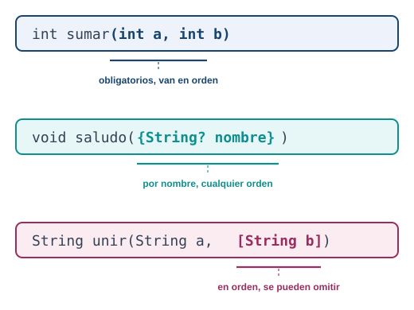
// posicionales: obligatorios, van en orden
int sumar(int a, int b) => a + b;
sumar(2, 3);
// nombrados: se llaman por nombre, "required" los hace obligatorios
void saludar({required String nombre, bool formal = false}) {
print(formal ? "Buenos dias, $nombre" : "Hola, $nombre");
}
saludar(nombre: "Ana");
saludar(nombre: "Ana", formal: true);
// opcionales posicionales: van en orden, se pueden omitir
String unir(String a, [String separador = " "]) => "$a$separador...";
unir("Hola");Las funciones son valores de primera clase: las puedes guardar en una variable, pasarlas como argumento o devolverlas desde otra función. Eso es lo que hace posible onPressed: miFuncion en Flutter.
void ejecutarDosVeces(void Function() accion) {
accion();
accion();
}
void saludoCorto() => print("Hola");
ejecutarDosVeces(saludoCorto);
// funcion anonima, la forma mas comun en Flutter
ejecutarDosVeces(() {
print("Hola de nuevo");
});Una clausura (closure) es una función que recuerda las variables de su entorno aunque ese entorno ya haya terminado de ejecutarse:
Function crearContador() {
var cuenta = 0;
return () {
cuenta++;
return cuenta;
};
}
var contador = crearContador();
print(contador()); // 1
print(contador()); // 2La coordinación te pide una función para calcular cuánto paga cada estudiante por el carné estudiantil. El costo base son 15000 pesos. Algunos estudiantes tienen descuento (por ejemplo, 20 significa 20% menos), pero la mayoría no tiene ninguno.
Escribe una función calcularCarne que reciba el costo base como parámetro obligatorio y el descuento como parámetro nombrado opcional (0 si no se indica), y que devuelva el costo final. Pruébala con y sin descuento.
double calcularCarne(double costoBase, {double descuento = 0}) {
return costoBase - (costoBase * descuento / 100);
}
void main() {
print(calcularCarne(15000)); // 15000.0, sin descuento
print(calcularCarne(15000, descuento: 20)); // 12000.0, 20% menos
}costoBase es posicional porque toda llamada lo necesita y no tiene ambigüedad en su orden. El descuento va nombrado y con valor por defecto 0: así la mayoría de estudiantes, que no tienen descuento, llaman la función con un solo argumento, y los que sí tienen descuento lo dejan explícito y claro en la llamada (descuento: 20) en vez de un número suelto sin contexto.
Programación orientada a objetos
Una clase en Dart agrupa campos y métodos. El constructor por defecto tiene el mismo nombre de la clase, y la sintaxis this.campo asigna el argumento directamente al campo sin escribir el cuerpo:
class Estudiante {
final String nombre;
final int grupo;
Estudiante(this.nombre, this.grupo); // constructor abreviado
String presentarse() => "$nombre, grupo $grupo";
}
var ana = Estudiante("Ana", 601);
print(ana.presentarse());Un constructor con nombre te deja ofrecer varias formas de crear el mismo tipo:
class Punto {
final double x;
final double y;
Punto(this.x, this.y);
Punto.origen() : x = 0, y = 0; // constructor con nombre
}
var p1 = Punto(3, 4);
var p2 = Punto.origen();Un constructor factory no siempre crea una instancia nueva: puede devolver una ya existente, útil para singletons o para elegir la subclase correcta según el argumento:
class Configuracion {
static Configuracion? _instancia;
Configuracion._interna(); // constructor privado, con guion bajo
factory Configuracion() {
return _instancia ??= Configuracion._interna();
}
}Getters y setters te dejan exponer un campo calculado como si fuera una propiedad normal:
class Rectangulo {
double ancho;
double alto;
Rectangulo(this.ancho, this.alto);
double get area => ancho * alto;
set area(double nuevaArea) => ancho = nuevaArea / alto;
}
var r = Rectangulo(4, 5);
print(r.area); // 20, se lee como campo aunque es un metodoHerencia, interfaces y mixins son las tres formas de reutilizar código, y no son intercambiables:
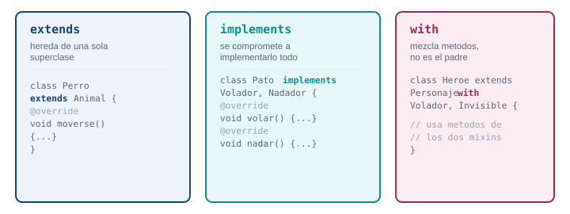
// extends: herencia de una sola superclase
class Animal {
void moverse() => print("Me muevo");
}
class Perro extends Animal {
@override
void moverse() => print("Corro");
}
// abstract class: no se puede instanciar, define el contrato de sus hijos
abstract class Figura {
double calcularArea(); // sin cuerpo, cada hijo lo implementa
}
class Cuadrado extends Figura {
final double lado;
Cuadrado(this.lado);
@override
double calcularArea() => lado * lado;
}
// implements: cada clase en Dart es tambien una interfaz implicita
class Pato implements Object {
@override
String toString() => "Pato";
}
// mixin: mezcla comportamiento de varias fuentes sin ser su padre
mixin Volador {
void volar() => print("Vuelo");
}
mixin Nadador {
void nadar() => print("Nado");
}
class Ganso with Volador, Nadador {}
var g = Ganso();
g.volar();
g.nadar();Los enums clásicos enumeran valores fijos. Desde Dart 2.17, un enum también puede tener campos, constructor y métodos, lo que evita crear una clase aparte solo para asociar datos a cada valor:
enum DiaClase { sabadoManana, sabadoTarde, juevesManana }
enum Prioridad {
baja(1, "Baja"),
media(2, "Media"),
alta(3, "Alta");
final int peso;
final String etiqueta;
const Prioridad(this.peso, this.etiqueta);
}
print(Prioridad.alta.etiqueta); // "Alta"
print(Prioridad.alta.peso); // 3Dart 3 agrega modificadores de clase para controlar quién puede heredar o implementar un tipo. Los vas a encontrar leyendo código de paquetes de Flutter, aunque no los necesites para tu proyecto todavía: final class no admite subclases fuera de su propio archivo, base class obliga a que las subclases usen extends (no implements), interface class obliga a que otros la usen solo con implements, y sealed class obliga a que un switch sobre ella cubra todos los casos posibles, porque el compilador conoce de antemano cada subclase.
Vas a modelar dos tipos de estudiante para el sistema de matrículas. Todo estudiante tiene nombre y costoMatricula. Un estudiante becado, además, tiene un porcentajeBeca (por ejemplo 50) y su costo final debe salir con ese descuento aplicado.
Crea una clase Estudiante con un método costoFinal() que por defecto devuelve el costo de matrícula sin cambios. Crea EstudianteBecado, que hereda de Estudiante y sobrescribe costoFinal() para aplicar el descuento de la beca.
class Estudiante {
final String nombre;
final double costoMatricula;
Estudiante(this.nombre, this.costoMatricula);
double costoFinal() => costoMatricula;
}
class EstudianteBecado extends Estudiante {
final double porcentajeBeca;
EstudianteBecado(String nombre, double costoMatricula, this.porcentajeBeca)
: super(nombre, costoMatricula);
@override
double costoFinal() => costoMatricula - (costoMatricula * porcentajeBeca / 100);
}
void main() {
var ana = Estudiante("Ana", 1200000);
var luis = EstudianteBecado("Luis", 1200000, 50);
print(ana.costoFinal()); // 1200000.0
print(luis.costoFinal()); // 600000.0
}EstudianteBecado extends Estudiante hereda nombre y costoMatricula, y el super(...) en el constructor le pasa esos dos valores al padre. @override en costoFinal() reemplaza el comportamiento heredado solo para esta subclase: el resto del programa puede tratar a cualquier estudiante igual, sin saber si es becado o no, y cada uno calcula su costo a su manera.
Genéricos y funciones de colección
Un genérico te deja escribir una clase o función que funciona con cualquier tipo, sin perder la seguridad de tipos:
class Caja<T> {
T contenido;
Caja(this.contenido);
}
var cajaDeTexto = Caja<String>("hola");
var cajaDeNumero = Caja<int>(42);Puedes limitar qué tipos acepta un genérico con extends: la clase solo compila con tipos que cumplan esa restricción, lo que te deja usar operadores que no existen para cualquier T:
class Calculadora<T extends num> {
T sumar(T a, T b) => (a + b) as T;
}
var calc = Calculadora<int>();
print(calc.sumar(3, 4)); // 7Las colecciones traen métodos funcionales que evitan escribir bucles manuales:
var notas = [3.2, 4.5, 2.8, 4.9, 3.9];
var aprobados = notas.where((n) => n >= 3.0).toList();
var enTexto = notas.map((n) => n.toStringAsFixed(1)).toList();
var promedio = notas.reduce((a, b) => a + b) / notas.length;
var suma = notas.fold(0.0, (acumulado, n) => acumulado + n);
var ordenadas = [...notas]..sort(); // sort() modifica en el sitio, por eso se copia antesExtension methods
Un extension method agrega comportamiento a un tipo que ya existe (aunque no sea tuyo, como String o int) sin heredar de él ni modificarlo. Evita llenar tu código de funciones sueltas que reciben el mismo tipo una y otra vez:
extension StringUtils on String {
String capitalizar() {
if (isEmpty) return this;
return "${this[0].toUpperCase()}${substring(1).toLowerCase()}";
}
bool get esCorreo => contains("@") && contains(".");
}
void main() {
print("hola mundo".capitalizar()); // Hola mundo
print("ana@iue.edu.co".esCorreo); // true
}La extensión solo aplica donde la importas: si StringUtils vive en otro archivo, necesitas importarlo para que "texto".capitalizar() compile. Dart la resuelve en tiempo de compilación, sin costo de rendimiento frente a una función normal.
Asincronía: el corazón de Flutter
Una app nunca puede quedarse congelada esperando una respuesta de red o un archivo: el usuario sigue tocando la pantalla mientras eso ocurre. Por eso Dart separa el código síncrono, que bloquea hasta terminar, del código asíncrono, que arranca una tarea y deja que el resto de la app siga funcionando mientras esa tarea termina en segundo plano.
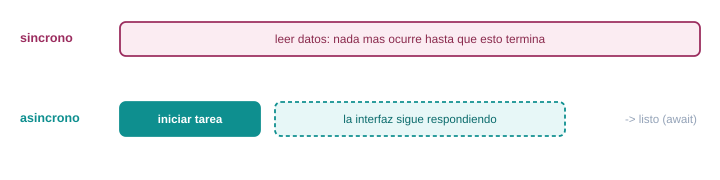
Un Future<T> representa un valor que todavía no existe, pero que va a existir (o va a fallar) en algún momento:
Future<String> obtenerNombreDeUsuario() {
return Future.delayed(const Duration(seconds: 2), () => "Ana");
}async y await son la forma legible de trabajar con un Future, en vez de encadenar .then():
Future<void> mostrarSaludo() async {
print("Buscando el nombre...");
var nombre = await obtenerNombreDeUsuario(); // aqui se espera, sin bloquear la app
print("Hola, $nombre");
}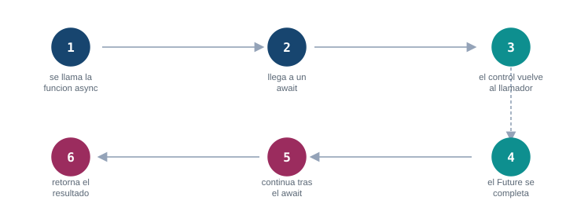
Los errores en código async se capturan con try/catch, igual que en código síncrono. Puedes capturar un tipo específico de excepción con on, y usar finally para el código que debe correr siempre, haya error o no:
Future<void> cargarDatos() async {
try {
var nombre = await obtenerNombreDeUsuario();
print("Cargado: $nombre");
} on FormatException catch (error) {
print("El dato no tenia el formato esperado: $error");
} catch (error) {
print("Fallo la carga: $error");
} finally {
print("Intento de carga terminado"); // corre siempre
}
}Antes de que existiera async/await, el estilo para trabajar con un Future era encadenar .then() y .catchError(). Todavía lo vas a encontrar en paquetes de terceros, así que reconócelo aunque prefieras async/await para tu propio código:
void cargarDatosEncadenado() {
obtenerNombreDeUsuario()
.then((nombre) => print("Cargado: $nombre"))
.catchError((error) => print("Fallo la carga: $error"));
print("Esta linea se ejecuta antes de que el Future termine");
}Cuando necesitas varias tareas asíncronas en paralelo, en vez de una detrás de otra, Future.wait las corre a la vez y espera a que todas terminen:
Future<void> cargarTodo() async {
var resultados = await Future.wait([
obtenerNombreDeUsuario(),
Future.delayed(const Duration(seconds: 1), () => "otro dato"),
]);
print(resultados); // ["Ana", "otro dato"], listo en 2 segundos, no en 3
}Un Stream<T> es como un Future, pero puede entregar varios valores a lo largo del tiempo en vez de uno solo: el ejemplo típico es una serie de eventos, o los datos que llegan poco a poco de un socket. Se crea con async* y yield en vez de return, y se consume con await for:
Stream<int> contarHasta(int limite) async* {
for (var i = 1; i <= limite; i++) {
await Future.delayed(const Duration(seconds: 1));
yield i;
}
}
Future<void> escucharConteo() async {
await for (var numero in contarHasta(3)) {
print("Van: $numero");
}
}Otra forma de consumir un Stream, útil cuando no estás dentro de una función async, es listen(): te registras con una función que se llama por cada valor, y opcionalmente con onError y onDone:
void escucharConEventos() {
contarHasta(3).listen(
(numero) => print("Van: $numero"),
onError: (error) => print("Error en el stream: $error"),
onDone: () => print("El stream termino"),
);
}En Flutter vas a consumir casi siempre un Stream con el widget StreamBuilder, que reconstruye la pantalla cada vez que llega un valor nuevo.
El sistema de asistencia de la universidad tarda 2 segundos en responder porque consulta una base de datos. Simula esa demora con Future.delayed y trae la lista de asistentes sin bloquear el resto del programa.
Escribe una función Future<List<String>> obtenerAsistencia() que, después de esperar 2 segundos, devuelva una lista con tres nombres. Luego, en main, imprime “Consultando…” antes de llamarla, espera el resultado con await, e imprime la lista y cuántos asistentes hay.
Future<List<String>> obtenerAsistencia() async {
await Future.delayed(const Duration(seconds: 2));
return ["Ana", "Luis", "Camila"];
}
void main() async {
print("Consultando...");
var asistentes = await obtenerAsistencia();
print(asistentes);
print("Total: ${asistentes.length}");
}main también necesita ser async para poder usar await adentro. Sin el await, asistentes guardaría un Future<List<String>> sin resolver, no la lista en sí: intentar leer .length sobre eso no compila. El await es lo que espera los 2 segundos y desempaqueta el valor real.
Records y patrones
Dart 3 agregó los records: un tipo que agrupa varios valores sin necesidad de declarar una clase para eso. Son útiles para que una función devuelva más de un valor:
(String, int) obtenerUsuarioActivo() {
return ("Ana", 601);
}
var usuario = obtenerUsuarioActivo();
print(usuario.$1); // "Ana", acceso directo por posicion
print(usuario.$2); // 601
var (nombre, grupo) = obtenerUsuarioActivo(); // destructuring
print("$nombre esta en el grupo $grupo");
// tambien con campos nombrados
({String nombre, int grupo}) obtenerUsuarioNombrado() {
return (nombre: "Ana", grupo: 601);
}
var resultado = obtenerUsuarioNombrado();
print(resultado.nombre);
// destructuring con campos nombrados: los dos puntos toman el valor por su nombre
var punto = (x: 10.0, y: 20.0);
var (:x, :y) = punto;
print("x=$x, y=$y");Un record no es la única forma de “desarmar” un valor. Una lista también admite patterns:
List<int> numeros = [1, 2, 3, 4, 5];
var [primero, segundo, ...resto] = numeros;
print("Primero: $primero, segundo: $segundo, resto: $resto");
// Primero: 1, segundo: 2, resto: [3, 4, 5]Combinado con el switch como expresión que ya viste, el reconocimiento de patrones te deja comparar la forma de un valor, no solo su contenido exacto. Puedes agregar una condición extra con when:
String clasificar(Object valor) => switch (valor) {
int n when n < 0 => "Numero negativo: $n",
int n when n == 0 => "Cero",
int n => "Numero positivo: $n",
String s => "Texto: $s",
_ => "Tipo desconocido",
};Es la sintaxis que vas a reconocer en código Flutter moderno cuando alguien maneja el resultado de una operación que puede tener éxito o fallar:
String interpretar((bool, String) resultado) => switch (resultado) {
(true, var mensaje) => "Exito: $mensaje",
(false, var mensaje) => "Error: $mensaje",
};Sealed classes: que el compilador vigile los casos
Una clase sealed solo se puede extender dentro del mismo archivo donde se declara. A cambio, el compilador conoce de antemano cada subtipo posible y te avisa si un switch sobre ella deja un caso sin cubrir. Es el patrón que vas a usar todo el semestre para modelar “esto puede salir bien o puede salir mal”, en vez de lanzar excepciones para todo:
sealed class Resultado<T> {}
class Exito<T> extends Resultado<T> {
final T valor;
Exito(this.valor);
}
class Fallo<T> extends Resultado<T> {
final String mensaje;
Fallo(this.mensaje);
}
Resultado<int> dividir(int a, int b) {
if (b == 0) return Fallo("No se puede dividir entre cero");
return Exito(a ~/ b);
}
void main() {
var resultado = dividir(10, 0);
// el compilador exige cubrir Exito y Fallo: si agregas un tercer subtipo
// y olvidas su caso aqui, el analizador lo marca como error
String mensaje = switch (resultado) {
Exito(valor: var v) => "Resultado: $v",
Fallo(mensaje: var m) => "Error: $m",
};
print(mensaje);
}Referencia rápida de comandos Dart
| Comando | Para qué sirve |
|---|---|
dart create -t console nombre |
Crea un proyecto de consola nuevo |
dart run |
Ejecuta bin/<nombre_del_proyecto>.dart |
dart run bin/archivo.dart |
Ejecuta un archivo Dart específico |
dart format . |
Aplica el estilo oficial a todo el proyecto |
dart analyze |
Busca errores y avisos sin ejecutar el código |
dart test |
Corre las pruebas de test/ |
dart pub get |
Descarga las dependencias listadas en pubspec.yaml |
dart pub add nombre_paquete |
Agrega una dependencia nueva al pubspec.yaml |
dart compile exe archivo.dart -o nombre |
Compila a un ejecutable nativo, sin necesitar el SDK instalado |
4 Parte 2. Tu primer proyecto Flutter
Ya viste el lenguaje. Ahora vas a crear un proyecto con la plantilla que trae Flutter, la misma que ya existe en hola_iue porque la generamos al preparar el material. Vuelve a crearla tú mismo para que el proceso completo quede en tus manos.
3 Crea el proyecto
flutter create hola_iue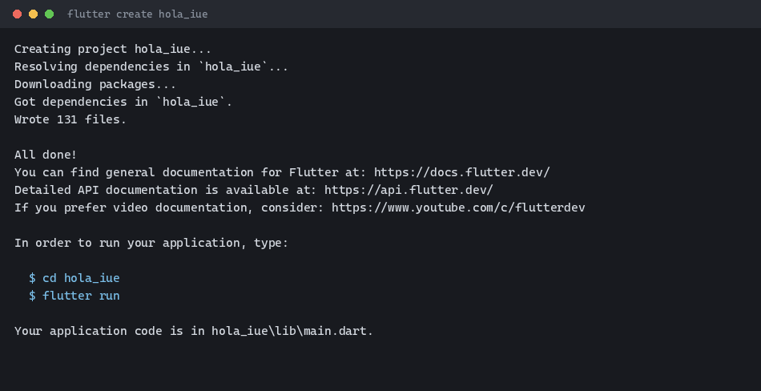
Flutter resuelve las dependencias, escribe alrededor de 130 archivos y termina con las instrucciones para entrar a la carpeta y correr la app. Esa salida es real, capturada al preparar este material.
Opciones útiles de flutter create
El comando por defecto sirve para empezar, pero acepta banderas que vas a necesitar en cuanto trabajes en un proyecto real:
| Bandera | Para qué sirve |
|---|---|
--org com.tuempresa |
Fija el identificador de organización (por defecto com.example), usado en el applicationId de Android y el bundle id de iOS |
--platforms android,web |
Genera solo las carpetas nativas que necesitas, en vez de las seis por defecto |
-e, --empty |
Crea main.dart mínimo, sin el contador de ejemplo ni comentarios |
-a, --android-language |
kotlin (por defecto) o java para el código nativo de Android |
Prueba la combinación con un proyecto de descarte, para ver el efecto real:
flutter create --org com.iue.demo --platforms android,web --empty demo_flagsCreating project demo_flags...
Resolving dependencies in `demo_flags`...
Downloading packages...
Got dependencies in `demo_flags`.
Wrote 41 files.
All done!
In order to run your empty application, type:
$ cd demo_flags
$ flutter run
Your empty application code is in demo_flags\lib\main.dart.Compara: hola_iue (todas las plataformas, plantilla completa) escribió unos 130 archivos. demo_flags (solo android y web, plantilla vacía) escribió 41. Su main.dart queda así de corto:
import 'package:flutter/material.dart';
void main() {
runApp(const MainApp());
}
class MainApp extends StatelessWidget {
const MainApp({super.key});
@override
Widget build(BuildContext context) {
return const MaterialApp(
home: Scaffold(
body: Center(
child: Text('Hello World!'),
),
),
);
}
}Salida y código reales, generados en esta máquina con Flutter 3.41.9. Una nota de precisión: la guía de referencia de un semestre anterior menciona también --ios-language; en esta versión de Flutter esa bandera existe pero está marcada como obsoleta (flutter create -h -v lo confirma): Swift es siempre el lenguaje de iOS ahora, la bandera no hace nada.
Abre el proyecto en tu editor
cd hola_iue
code .Con las extensiones Flutter y Dart instaladas en VS Code (las instalaste en el Tema 1) obtienes autocompletado, navegación del árbol de widgets, depuración integrada y un botón de recarga en caliente en la barra de estado. Si prefieres Android Studio, usa Open desde la pantalla de inicio y selecciona la carpeta del proyecto: lo reconoce automáticamente como proyecto Flutter.
Anatomía de la carpeta generada
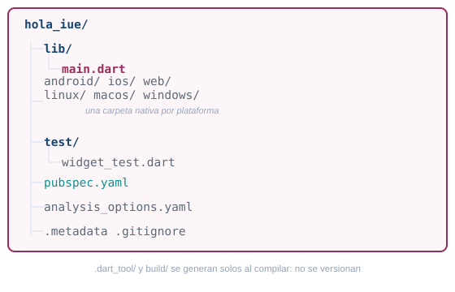
| Archivo o carpeta | Para qué sirve | Cuándo la tocas |
|---|---|---|
lib/main.dart |
El punto de entrada de la app | Siempre: aquí vive casi todo tu código |
android/ |
Proyecto nativo de Android (Gradle); Flutter inyecta ahí el código Dart compilado | Para permisos, el ícono de la app o el applicationId |
ios/ |
Proyecto nativo de iOS (Xcode); solo se compila desde macOS | Para permisos o el bundle id |
web/, linux/, macos/, windows/ |
Proyectos nativos del resto de plataformas | Rara vez; sobre todo íconos y metadatos |
test/widget_test.dart |
Una prueba de ejemplo sobre el widget inicial | Cuando escribes pruebas |
pubspec.yaml |
Nombre, versión, dependencias y assets del proyecto | Cada vez que agregas un paquete o un asset |
analysis_options.yaml |
Reglas del analizador, con flutter_lints activado por defecto |
Si quieres activar o apagar una regla del linter |
.metadata |
Registro interno de Flutter: versión del SDK y plantilla usadas al crear el proyecto | Nunca, es generado |
.gitignore |
Ignora .dart_tool/, build/ y archivos generados por cada IDE |
Rara vez |
.dart_tool/ y build/ aparecen la primera vez que corres o compilas la app. No los toques ni los subas a git: se regeneran solos con flutter pub get y flutter run. Y ni se te ocurra editar GeneratedPluginRegistrant dentro de android/ o ios/: como el nombre lo dice, Flutter lo regenera solo en cada build.
El código que generó flutter create
Abre hola_iue/lib/main.dart. Es el punto de entrada de toda la app: cuando corres flutter run, Dart llama primero a la función main() de este archivo.
import 'package:flutter/material.dart';
void main() {
runApp(const MyApp());
}
class MyApp extends StatelessWidget {
const MyApp({super.key});
@override
Widget build(BuildContext context) {
return MaterialApp(
title: 'Flutter Demo',
theme: ThemeData(
colorScheme: .fromSeed(seedColor: Colors.deepPurple),
),
home: const MyHomePage(title: 'Flutter Demo Home Page'),
);
}
}import 'package:flutter/material.dart'trae la biblioteca de Material Design, con casi todos los widgets que usa este curso.void main()es la función de entrada del programa Dart, igual que en la Parte 1; en un proyecto Flutter, lo único que hace es arrancar la app.runApp(const MyApp())toma un widget y lo convierte en la raíz del árbol de widgets: ese widget ocupa toda la pantalla.class MyApp extends StatelessWidgetdeclara un widget sin estado propio: su apariencia depende solo de lo que devuelvebuild(), nunca cambia por sí sola.MaterialAppes el widget que configura toda la app de una vez: tema, título, pantalla inicial y rutas de navegación.
MaterialApp tiene una alternativa, CupertinoApp, para cuando quieres que la app se vea como una app nativa de iOS en vez de Material Design:
MaterialApp |
CupertinoApp |
|---|---|
| Estilo Material Design (Google), el que usa Android | Estilo iOS (Apple) |
Widgets: Scaffold, AppBar, ElevatedButton |
Widgets: CupertinoPageScaffold, CupertinoButton |
| Funciona igual de bien en iOS que en Android | Pensado para apps que imitan el look nativo de iOS |
| El que usa este curso | Para apps que imitan a fondo el estilo iOS |
Otras propiedades de MaterialApp que vas a usar seguido:
MaterialApp(
title: 'Nombre de la app', // usado por el sistema operativo, no se ve en pantalla
debugShowCheckedModeBanner: false, // oculta la cinta roja "DEBUG" de la esquina
theme: ThemeData(...), // tema claro
darkTheme: ThemeData(...), // tema oscuro
home: const MyHomePage(...), // la primera pantalla que se muestra
)pubspec.yaml, explicado
name: hola_iue
description: "A new Flutter project."
publish_to: 'none'
version: 1.0.0+1
environment:
sdk: ^3.11.5
dependencies:
flutter:
sdk: flutter
cupertino_icons: ^1.0.8
dev_dependencies:
flutter_test:
sdk: flutter
flutter_lints: ^6.0.0
flutter:
uses-material-design: truename es el identificador interno del paquete: solo minúsculas y guiones bajos, sin espacios. environment: sdk: fija qué versiones de Dart acepta el proyecto; el símbolo ^ significa “esta versión o cualquier compatible más nueva, sin cambios que rompan el código”. dependencies son los paquetes que tu app necesita para funcionar; dev_dependencies son los que solo hacen falta mientras desarrollas (pruebas, reglas de estilo). flutter: uses-material-design: true habilita el paquete completo de íconos de Material Design.
El campo version: 1.0.0+1 tiene dos partes separadas por +. Antes del + va el nombre de versión que ve el usuario (sigue semver: MAYOR.MENOR.PARCHE). Después del + va el código de versión interno: un entero que debes subir en cada release, porque Android e iOS lo usan para saber si una versión es más nueva que la anterior instalada.
Cómo agregar un paquete a un proyecto Flutter (el equivalente a dart pub add que ya usaste en la Parte 1, pero para proyectos Flutter):
flutter pub add shared_preferencesEse comando agrega la línea a dependencies en pubspec.yaml y descarga el paquete. Luego lo importas donde lo necesites:
import 'package:shared_preferences/shared_preferences.dart';4 Ejecuta la app
Confirma qué dispositivos ve Flutter. En esta máquina, sin ningún emulador Android abierto todavía, flutter devices responde esto (salida real):
Found 3 connected devices:
Windows (desktop) - windows - windows-x64
Chrome (web) - chrome - web-javascript
Edge (web) - edge - web-javascriptCon el emulador Android que dejaste listo en el Tema 1 abierto, aparece una cuarta línea con su nombre. Corre la app en el dispositivo por defecto:
cd hola_iue
flutter runO elige un dispositivo específico con -d (útil cuando tienes varios abiertos a la vez):
flutter run -d chrome
flutter run -d windows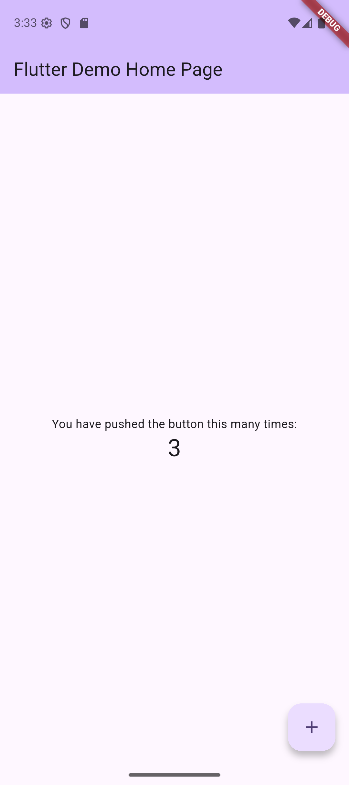
Esa es la app de plantilla: un contador que sube cada vez que tocas el botón flotante. La captura es real, tomada en el emulador durante la preparación de este material.
Recarga en caliente frente a reinicio en caliente
Con flutter run corriendo, la terminal queda escuchando teclas. Cambia algo en lib/main.dart (por ejemplo el texto 'Flutter Demo Home Page'), guarda el archivo, y presiona r en la terminal.
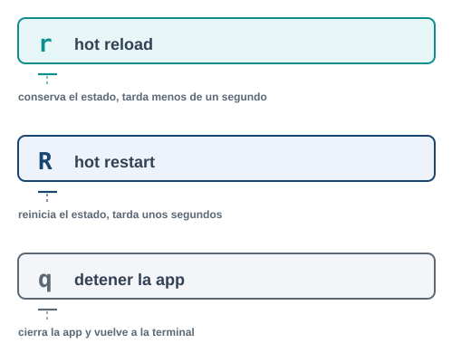
La recarga en caliente (r) inyecta el código nuevo en la app que ya está corriendo y conserva el estado: si el contador iba en 3, sigue en 3. El reinicio en caliente (R mayúscula) reconstruye la app desde cero y el estado vuelve a su valor inicial. Usa R cuando cambiaste main(), una variable global, o cuando la recarga en caliente no parece reflejar tu cambio.
Mientras flutter run sigue corriendo, la terminal escucha varias teclas más:
| Tecla | Acción |
|---|---|
r |
Recarga en caliente: conserva el estado |
R |
Reinicio en caliente: pierde el estado |
p |
Muestra los bordes de cada widget, util para depurar el layout |
h |
Lista todos los atajos disponibles |
d |
Desconecta la terminal sin cerrar la app |
q |
Cierra la app y vuelve a la terminal |
Comandos de Flutter que vas a usar todo el semestre
| Comando | Para qué sirve |
|---|---|
flutter doctor |
Diagnostica el entorno: SDK, Android Studio, dispositivos, licencias |
flutter devices |
Lista los emuladores y dispositivos físicos disponibles |
flutter create nombre |
Crea un proyecto nuevo con la plantilla estandar |
flutter run |
Compila y ejecuta la app en el dispositivo seleccionado |
flutter pub get |
Descarga las dependencias del pubspec.yaml |
flutter analyze |
Busca errores y avisos de estilo sin ejecutar la app |
flutter test |
Corre las pruebas del proyecto |
flutter clean |
Borra build/ y .dart_tool/; usalo cuando un error no tiene sentido |
5 Errores frecuentes
Error 1
Fallo de Gradle al compilar para Android
Causa. Al compilar por primera vez, Gradle descarga el plugin de Flutter desde plugins.gradle.org. Si la red no puede resolver ese host (proxy, firewall institucional, o una caída puntual de DNS), la compilación falla con un mensaje como este, capturado real durante la preparación del material:
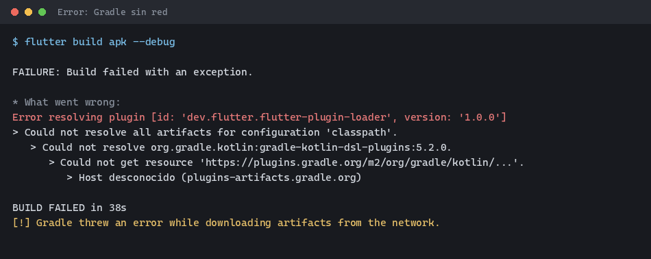
Solución. Confirma que tienes salida a internet fuera de la red de la institución si sospechas un bloqueo, o cambia de red. Vuelve a intentar el build: casi siempre es una falla puntual de resolución de DNS, no un problema del proyecto. Si se repite siempre en la misma red, revisa con el área de sistemas si plugins.gradle.org está bloqueado.
Error 2
flutter run no encuentra dispositivos
Causa. El emulador no está abierto, o el dispositivo físico no tiene la depuración USB activada (la revisaste en el Tema 1).
Solución. Abre el emulador desde Android Studio antes de correr flutter run, o corre flutter devices para confirmar que tu dispositivo aparece en la lista antes de intentar de nuevo.
Error 3
La recarga en caliente no refleja el cambio
Causa. Cambiaste main(), una variable const de nivel superior, o el estado inicial de un State. La recarga en caliente solo aplica cambios dentro de métodos existentes.
Solución. Usa reinicio en caliente (R) en vez de recarga (r).
6 Parte 3. Una pantalla con estado propio
El pacto de este tema pide que Dart y la asincronía queden dominados, y que tu app reaccione a la interacción del usuario. Aquí llega justo lo mínimo para que una pantalla tenga memoria propia, sin el árbol de widgets completo ni el ciclo de vida de un State.
StatelessWidget frente a StatefulWidget
Un StatelessWidget no guarda nada: una vez construido, se ve siempre igual mientras no cambien sus parámetros de entrada. Un StatefulWidget sí guarda datos propios, en un objeto State aparte, y puede reconstruirse a sí mismo cuando esos datos cambian.
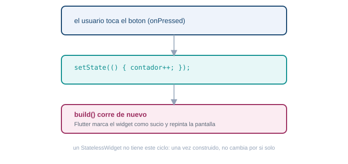
Complemento: arquitectura de Flutter
En hola_iue/lib/main.dart, MyApp es un StatelessWidget (nunca cambia) y MyHomePage es un StatefulWidget cuyo estado vive en _MyHomePageState:
class _MyHomePageState extends State<MyHomePage> {
int _counter = 0;
void _incrementCounter() {
setState(() {
_counter++;
});
}
// ...
}setState hace dos cosas: cambia el valor, y le avisa a Flutter que este widget necesita volver a dibujarse. Si quitas el setState y dejas solo _counter++;, el número cambia en memoria pero la pantalla nunca se entera.
Una nota sobre el propio main.dart generado: vas a ver líneas como colorScheme: .fromSeed(seedColor: Colors.deepPurple) o mainAxisAlignment: .center, sin el nombre completo ColorScheme.fromSeed o MainAxisAlignment.center delante del punto. Es una forma abreviada de Dart moderno: cuando el tipo esperado ya se conoce por el contexto (aquí, Flutter sabe que colorScheme espera un ColorScheme), puedes escribir solo .loQueSea y Dart completa el resto. No necesitas dominarla hoy, solo reconocerla cuando la veas.
5 Dale un estado propio a la pantalla
La plantilla ya reacciona a la interacción (el contador sube al tocar el botón), pero es genérica. Tu entregable pide una pantalla con estado propio.
Cambia _MyHomePageState para que guarde algo distinto al contador de ejemplo. Necesitas: una variable de estado propia (no _counter), una condición que decida qué se muestra según esa variable, y un setState disparado por un botón o un gesto que la cambie. Antes de mirar la solución, intenta escribir tu propia versión: puede ser un corazón de favorito, un interruptor de tema claro/oscuro, o cualquier otra idea tuya.
class _MyHomePageState extends State<MyHomePage> {
bool _favorito = false;
void _alternarFavorito() {
setState(() {
_favorito = !_favorito;
});
}
@override
Widget build(BuildContext context) {
return Scaffold(
appBar: AppBar(title: Text(widget.title)),
body: Center(
child: Column(
mainAxisAlignment: MainAxisAlignment.center,
children: [
Icon(
_favorito ? Icons.favorite : Icons.favorite_border,
color: _favorito ? Colors.red : Colors.grey,
size: 64,
),
Text(_favorito ? "En tus favoritos" : "Toca para agregar"),
],
),
),
floatingActionButton: FloatingActionButton(
onPressed: _alternarFavorito,
child: const Icon(Icons.favorite),
),
);
}
}No copies este ejemplo tal cual para tu entregable: usa una variable, una condición y una interacción distintas (un contador con límite, un interruptor de tema, una lista que crece al tocar un botón). La idea es que el setState sea tuyo, no una copia.
7 Lista de chequeo del tema
8 Recursos
- Tour del lenguaje Dart: https://dart.dev/language
- Biblioteca de paquetes Dart y Flutter: https://pub.dev
- Documentación oficial de Flutter: https://docs.flutter.dev
- Codelab oficial “Write your first Flutter app”: https://docs.flutter.dev/get-started/codelab
Si quieres entender cómo está construido Flutter por dentro antes de seguir escribiendo pantallas, continúa con Arquitectura de Flutter, cómo se estructura un programa multiplataforma.
Lenguajes de computación para móviles. Fundación Universitaria María Cano. Facultad de Ingeniería. Semestre 2026-02.
Transparencia. La redacción de esta guía contó con el apoyo de inteligencia artificial, usando el modelo Claude Sonnet 5 de Anthropic. Todo el contenido fue revisado y validado. Las capturas de terminal y de emulador son reales, tomadas durante la preparación del material.